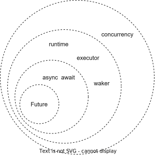
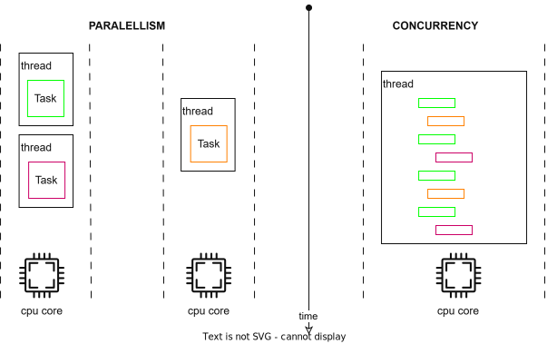
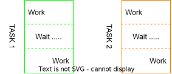
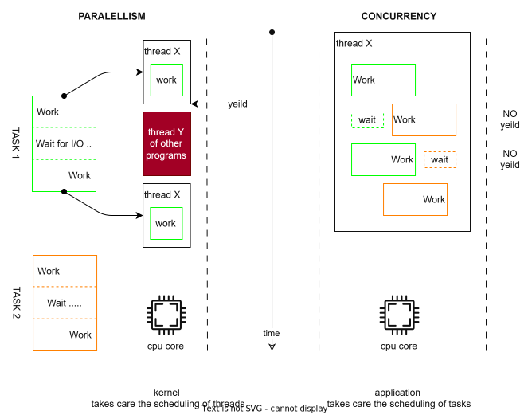
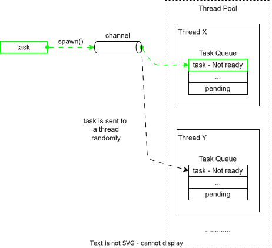
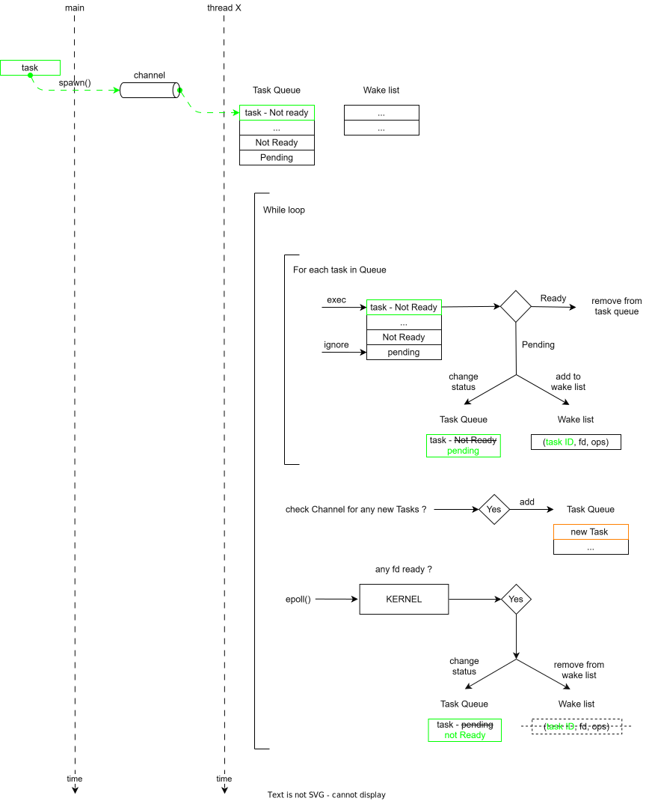
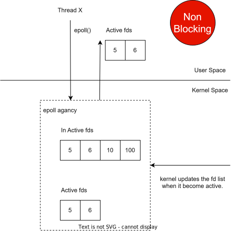
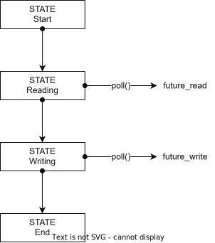
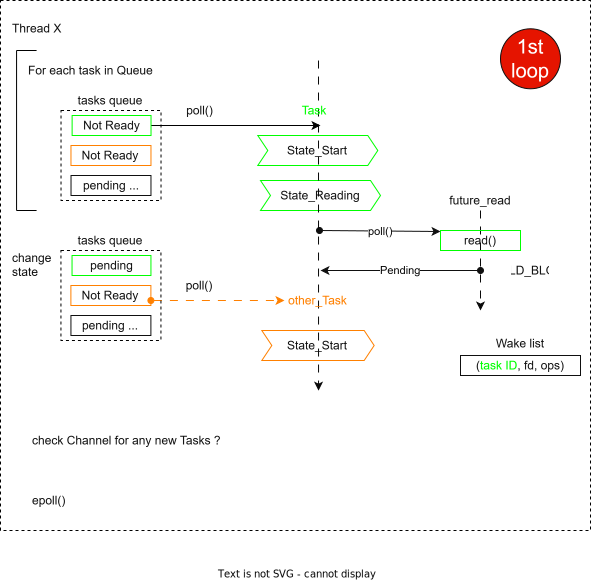
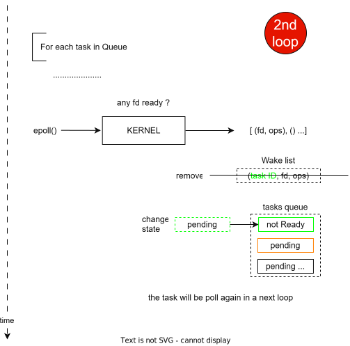

Async Await
Overview

- To get a better understand about async-await, we should get to understand about concurrency programming.
Concurrency vs Paralellism
-
Paralellism & Concurrency is two approachs to handle multiple tasks at the same time.
-
Paralellism:
- Each thread handle 1 task.
- Use multiple threads to handle multiple tasks.
-
Concurrency:
- Each thread can handle multiple tasks ->> no need much thread.
- At a point of time, one thread can execute only 1 task, but the thread can switch between it's tasks.

-
Comments & Questions:
- In both approachs, one thread can execute 1 task at a time. Why use Concurrency over Paralellism ?
- In the image, it's seem Paralellism can finish the Green Task faster than Concurrency ?
- Paralellism can isolated task. It looks much better.
- How Concurrency knows how to mix the task ?
-
The answers for those questions above is inside the task. Concurrency will show it's advantage when work with the tasks which have to wait for events from I/O. The CPU core runs much faster than I/O devices. So, for e.g, it has to wait for I/O drivers to write something to disk, or wait for I/O socket, ...etc.

-
Idle CPU core is a waste of resource.
- In Paralellism, thread must yeild the CPU to another thread, and let the kernel schedule to have chance to run again. Ofcourse, the next thread might belong to another program.
- In Concurrency, NO yeilding happends. Thread will switch to another task, if current task are waiting for I/O.

-
The image shows that the Green Task might be completed earlier, compare to Paralellism.
-
But, Paralellism is easier to implement, because Kernel helps to take care all the threads.
-
To implement Concurrency, we need to implement mechanism for thread to be able to hold tasks and switch between tasks. It's time for Runtime to comes as a rescuer.
Runtime
-
The most popular runtime for Rust is Tokio runtime
-
Runtime provide mechanisms for:
- Store list of tasks run in concurrency
- Which task will be run next
- When to re-invoke a pending task
- I/O functions for async programming ...
```rust // example from https://tokio.rs/tokio/tutorial/spawning use tokio::net::TcpListener;
[tokio::main]
async fn main() { let listener = TcpListener::bind("127.0.0.1:6379").await.unwrap();
loop { let (socket, _) = listener.accept().await.unwrap(); // A new task is spawned for each inbound socket. The socket is // moved to the new task and processed there. tokio::spawn(async move { process(socket).await; }); }} ```
-
Note for #[tokio::main]
```rust
[tokio::main]
async fn main() { code_inside_main_fn(); }
// is equivalent to
fn main() { let mut rt = tokio::runtime::Runtime::new().unwrap(); rt.block_on(async { code_inside_main_fn(); }) } ```
-
Tokio run time has 2 operation mode:
- Single-thread runtime: all tasks, executor, reactor are placed inside 1 thread.
- Multi-thread runtime: using multiple thread to execute tasks (thread pool)

-
Bellow is how a task is randomly moved to and be executed in a thread.
-
The mechanism to drive I/O events is based on Operating System and the system call must be Non-Blocking.
- Linux: epoll
- Mac: kqueue
- Windows: IOCP Input/output completion port

-
In Linux, epoll can be use to ask kernel to mornitor for a I/O, which represented by a File Description (fd) number.
- Epoll is non-blocking, the result is return immediately.

Async Await
-
Async Await key words are use to write asynchronous task.
```rust async fn main { asynchronous_task.await(); }
async fn asynchronous_task () -> uszie { println!{"hello world"}; // work let n_char = read_from_disk().await(); // wait ... return n_char // work } // is equivalent with fn asynchronous_task () -> impl Future
-
Async function is somehow equipvalent with a Future. Let's find out what is Future.
-
Future is defined as:
A future is a value that might not have finished computing yet. This kind of “asynchronous value” makes it possible for a thread to continue doing useful work while it waits for the value to become available.
-
The Future's defination matchs with the waiting part in our task above.
-
The core method of future, poll, attempts to resolve the future into a final value
-
We can write a poll funtion in a simplest way:
- call read() with O_NON_BLOCKING flag, it means, check with kernel if a FD is ready to read.
- if fd is ready, the data is return from read(), future is done.
- if fd is not ready, read() returns WOULD_BLOCK ->> ask waker to monitor the fd.
- the poll will be called again, when waker signals executor.
```rust // simplest future fn poll(waker) {
let r = read(fd, ops, O_NON_BLOCKING); if r == OK { return r.data; } if r == WOULD_BLOCK { wake.push(fd, ops); }} ```
-
How to write a complex Future.
- And how the poll() function knows where to continue for the 2nd poll.
rust // nested poll function fn poll () { // work before read // future 1 fut_read_socket.await(); // work before write // future 2 fut_write_socket.await(); } -
Actually, before the introduction of async-await, async task was implemented as a State Machine.
```rust Enum State
{ State_Start, State_Reading(Option ), // before read() completed State_Writing(x, y, z), // before write() completed State_End, } impl
Future for State { type Output = (); fn poll(&mut self) -> Poll<Self::Output> { match self { State::State_Start => { println!{"some work before Read"}; // change state *self = State::State_Reading(data, ...); return self.poll(); } State::State_Reading(data, ...) => { if let Poll::Ready() = fut_read_socket.poll() { println!{"some work before Write"}; // change state *self = State::State_Writing(data, ...); return self.poll(); } else { Poll::Pending } } State::State_Writing(data, ...) => { if let Poll::Ready() = fut_write_socket.poll() { // change state *self = State::State_End; return self.poll(); } else { Poll::Pending } } State::State_End => { Poll::Ready(()) } } }} ```
-
By using state machine, we can ensure that we can call poll() function multiple time but some logic is not be executed more than once.

-
The detail of how state machine work

